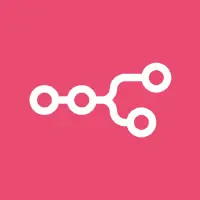
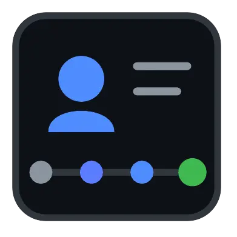

TL;DR
Statistics to find bottlenecks, operations research to eliminate them, coding to automate the rest. The teams I work with get operational proprioception and no firefighting.
MSc in applied mathematics (cardiovascular modelling), then two years of self-employment: process improvement, and a string of ventures I started, ran, and closed.
Business process improvement for local companies. Post-mortem

Accounting automation: cleared a 3-month bookkeeping backlog in 1 month.- AI compliance: made a retail AI agent GDPR- and AI Act-compliant.
- AI-assisted PIM: designed an alternative to a €50–100K enterprise PIM.
Optimized and automated a writing-coach business. Post-mortem
- Shorts from YouTube lives: ~50,000 views per month, at $4/month.
- Newsletter-gated courses: replaced a €1,000/year platform, live views ×2.3.
- Synthetic target audience: LLM-simulated purchase intent to test ads.
Story-driven marketing for companies. Post-mortem

LLM-powered CRM: finds venues and contacts, drafts the outreach emails.
Corporate team building as a storytelling role-playing game. Post-mortem
- Storycast: desktop app to run a game session live.
Only mathematician in the ops excellence team of a major multinational. Blog post
Implemented mechanical models in a physics-informed neural network.
One of 8 winners (230+ entries) of the UN Sci-fAI Futures Youth Challenge.
Thesis: A 0D-1D global, closed-loop model of the cardiovascular system, written during a thesis mobility program at the University of Graz.
Final exam project: Bike Sharing, an RFID bike-sharing system.